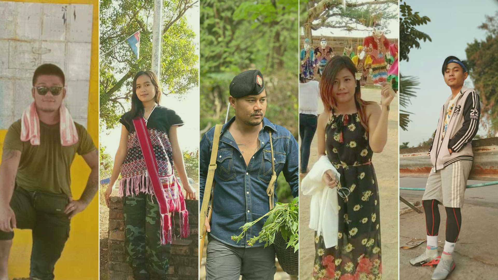
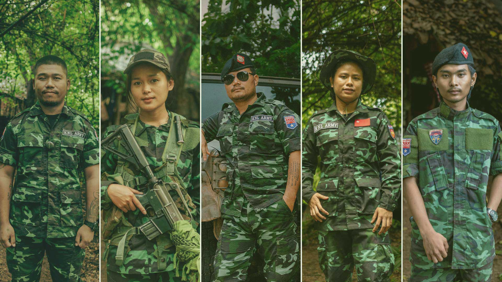

A new generation in Myanmar risks their lives for change


Across Myanmar, tens of thousands of young people have joined a range of anti-junta forces.
Nov. 21, 2024
By Aye Aye Mon and Chan Aung, RFA Burmese
When Myanmar’s military seized power in February 2021, Le Vai was a 10th grader with a passion for guitar, piano and singing. An aspiring artist, Le Vai looked forward to leaving his native Yangon and studying abroad.
Instead, before the year’s end, Le Vai — then 16 — joined the armed civilian resistance movement.
"My mom said, ‘Whatever you do, finish it but don't let yourself die,’" the now-20-year-old recounted in July.
Barli, from Gwa township in Rakhine state, was in his first year of Myanmar literature studies when the coup occurred. He joined the peaceful protest movement, only to witness some of his friends being killed by the military. By September, he had taken up arms.
“There is no justification for threatening unarmed people with weapons,” the 25-year-old told Radio Free Asia. “We couldn't tolerate it any longer, which is why we came here, resolute in our decision to take up arms and fight.”
Sandar Aye, a 27-year-old Karen native from Thaton township in Mon state, had spent most of her early twenties supporting her impoverished parents as a migrant worker in a Bangkok factory.
However, after witnessing the coup and the ensuing arrests and killings, she returned home to join the Karen National Liberation Army, or KNLA.
“Our aim is to eliminate injustices,” Sandar Aye said. “This is why we have all taken up arms.”
Today, Sandar Aye, Barli and Le Vai are all serving in the Cobra and Black Panther columns in Myawaddy district, within the Karen National Union’s Brigade 6 area. Often on the front lines, these three youth regularly face the threat of junta air strikes. Each has lost friends — to bombings, battles, malaria and more.
But their situation is far from unique. Across Myanmar, tens of thousands of young people have joined a range of anti-junta forces. These include numerous ethnic armed organizations, like the KNLA, as well as the People’s Defense Force, which is the armed wing of the National Unity Government — the government-in-exile formed by members of the former democratic leadership. In the KNU’s Brigade 6 area alone, thousands of young people have traded in their previous dreams for a sole, unifying goal.
“Regardless of the area — whether in Karen state or among any other ethnic group — the desire for peace and justice is universal,” Sandar Aye said.
Gathering courage
When a young person becomes a revolutionary, the military often responds by arresting and torturing the parents and remaining family members. As a result, some of the trio’s peers have been abandoned by their families.
The support they and others here get from their peers has become invaluable for many young fighters.
"I underwent training and contracted malaria upon arrival,” recounted Myat Lay, 29, who joined the People's Defense Force in April 2022, leaving her job as an assistant at her aunt’s grocery store. “During such times of weakness, it is the support of these comrades, my brothers and sisters, that lifts me up again."
Le Vai, suffered after his first battle, having witnessed the injury and death of his friends. Others, however, quickly stepped in, helping him overcome the painful losses.
“At that time, I was very excited because it was my first fight as a newcomer. However, the harsh realities of war quickly became evident as both my friends and I were affected by the violence,” he said. “My seniors encouraged me to maintain my composure.”
Nyar Kho, who left the Mae La refugee camp on the Thai-Myanmar border six years ago to join the KNLA and currently serves as a company commander at a dangerous guard station, said the coup solidified his chief goal.
“If I give up my life, it’s okay. Our sole purpose is to bring about the fall of this dictator. Regardless of the outcome, even if it means our deaths, we will be remembered as noble for having given everything for this cause,” he said.
Dreaming of the future
While they fight for justice and their country, many still have retained personal aspirations for the future. Le Vai has decided that if he survives the war, he will start a business with his friends.
“After the conflict ends, all the surviving comrades plan to come together. As young people with a shared interest in games, we are considering starting a game store or a tea shop,” he said.
Nyar Kho has resolved to contribute to the development of Kayin state and the country once the war is over.
“Even if we survive the war, we will remain committed to fulfilling our responsibilities,” he said. “We must contribute to the reconstruction of this federal union from our respective positions.”
Like Nyar Kho, Barli and Sandar Aye plan to work to help implement a new federal democracy after the war ends. Myat Lay, an earnest woman from upper Myanmar, said she dreams of supporting her mother by opening a grocery store post-war.
“I love my mother deeply, but I feel I haven't fully fulfilled my responsibilities as a daughter,” she said, her eyes filling with tears. “I want to do something for my mother.”
Regardless of individual aspirations, one dream is shared by all: for the war to end quickly so they can return home.
“I only pray that this revolution ends soon and that Myanmar stands peacefully in the world,” said Barli.
Nyar Kho, who spent his childhood in a refugee camp due to fighting in his home state, prays for peace across the country.
“Since the day we became human, we have never had a place to truly call our own. This is why I pray for peace in Myanmar as soon as possible,” he said.